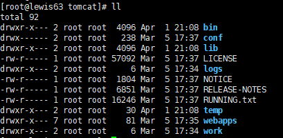
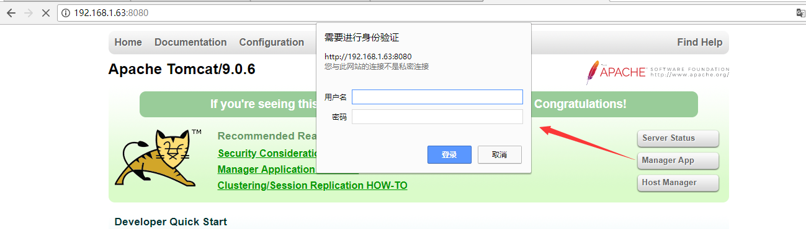
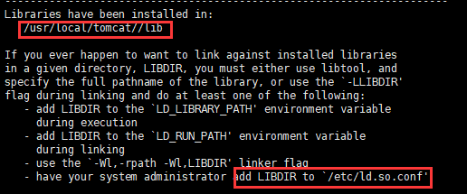

Tomcat环境搭建
模式：B/S模式
端口：8080
Tomcat 服务器是一个免费的开放源代码的 Web 应用服务器，属于轻量级应用服务器，在中小型系统和并发访问用户不是很多的场合下被普遍使用，是开发和调试 JSP 程序的首选。 Tomcat 和 IIS 等 Web 服务器一样，具有处理 HTML 页面的功能。不过，Tomcat 处理静态 HTML 的能力不如 Apache 服务器。
MySQL-Connector-Java是MySQL的JDBC驱动包， 用JDBC连接MySQL数据库时必须使用该jar包
Tomcat Native 这个项目可以让 Tomcat 使用 Apache 的 apr 包来处理包括文件和网络IO操作，以提升性能。直接说就是用tomcat-native这个软件来提高tomcat处理静态页面的性能。这个软件在tomcat的bin目录下已经提供，不用单独去下载了！可以tomcat处理静态的性能略逊于apache！
安装JDK
如果安装了openjdk，请先卸载，否则安装不了oracle官方的jdk
yum -y remove java-*
[root\@lewis63 ~]# tar zxf jdk-8u161-linux-x64.tar.gz -C /usr/local/
设置环境变量：
[root\@lewis63 ~]# vim /etc/profile
export JAVA_HOME=/usr/local/jdk1.8.0_161
export JAVA_BIN=/usr/local/jdk1.8.0_161/bin
export PATH=${JAVA_HOME}/bin:$PATH
export CLASSPATH=.:${JAVA_HOME}/lib/dt.jar:${JAVA_HOME}/lib/tools.jar
[root\@lewis63 ~]# source /etc/profile
安装Tomcat
下载
wget http://mirrors.shu.edu.cn/apache/tomcat/tomcat-9/v9.0.6/bin/apache-tomcat-9.0.6.tar.gz
tar zxf apache-tomcat-9.0.6.tar.gz -C /usr/local/
[root\@lewis63 local]# mv apache-tomcat-9.0.6 tomcat 改名

各目录文件用途：
tomcat
**\|---**bin：存放启动和关闭tomcat执行脚本；
**\|---**conf ：存放不同的配置文件（server.xml和web.xml）；
**\|---**lib：
包含Tomcat使用的jar文件.unix平台此目录下的任何文件都被加到Tomcat的classpath中；
**\|---**logs：存放Tomcat执行时的LOG文件；
|---webapps：Tomcat的主要Web发布目录（包括应用程序示例）；
**\|---** ROOT：tomcat的家目录
**\|---** index.jsp：Tomcat的默认首页文件
|---work：存放jsp编译后产生的class文件或servlet文件存放
|---temp：存放Tomcat运行时所产生的临时文件
Tomcat启动脚本
[root\@lewis63 ~]# vim /etc/init.d/tomcat
#!/bin/bash
# Tomcat init script for Linux
# chkconfig: 2345 96 14
# discription: The Apache Tomcat Server/JSP container
JAVA_OPTS='-server -Xms64m -Xmx128m'
JAVA_HOME=/usr/local/jdk1.8.0_161
CATALINA_HOME=/usr/local/tomcat
$CATALINA_HOME/bin/catalina.sh $*
JAVA_OPTS='-server -Xms64m -Xmx128m'是用来设置JAVA相关运行参数的变量
-server 一定要作为第一个参数，在多个CPU时性能佳
-Xms 初始heap（堆）大小，使用最小内存大小，cpu性能高时此值应该设大一些
-Xmx Java heap最大值，使用内存的最大值
上面两个值分配的是JVM的最小和最大值，取决于硬件的物理内存大小，建议为物理内存的一半，不超过80%
chmod +x /etc/init.d/tomcat
/etc/init.d/tomcat start 启动tomcat服务
[root\@lewis63 ~]# netstat -anput | grep 8080
tcp6 0 0 :::8080 :::* LISTEN 1891/java
测试Tomcat http://ip:8080/

点击manager App,需要一个用户名和密码：

创建管理Manger App用户
vim /usr/local/tomcat/conf/tomcat-users.xml
注释去掉，修改为
\
\
\
\
\
\
\
说明
manager-gui：Allows access to the html interface（允许通过web的方式登录查看服务器信息）
tomcat8以上还要增加配置（配置远程访问的manager）
vim /usr/local/tomcat/conf/Catalina/localhost/manager.xml
\<Context privileged="true" antiResourceLocking="false"
docBase="${catalina.home}/webapps/manager">
\
\</Context>
重启tomcat
搭建基于域名的虚拟主机
[root\@lewis63 ~]# ls /usr/local/tomcat/conf/
Catalina catalina.properties jaspic-providers.xml logging.properties tomcat-users.xml web.xml
catalina.policy context.xml jaspic-providers.xsd server.xml tomcat-users.xsd
server.xml是Tomcat的主配置文件（全局）,服务器设置的，例如端口设置，路径设置。
context里设置tomcat数据源，用来连接数据库。
tomcat_users主要是用户名和密码的设置。
web是默认首页等等之类的设置
[root\@lewis63 ~]# vim /usr/local/tomcat/conf/server.xml
\
\
\</Host>
\
\
\</Host>
[root\@lewis63 ~]# mkdir -p /var/www/html/{web1,web2}
[root\@lewis63 ~]# echo 'welcome to lewis63.com' > /var/www/html/web1/index.html
[root\@lewis63 ~]# echo 'welcome to lewis63.cn' > /var/www/html/web2/index.html
[root\@lewis63 ~]# vim /etc/hosts
192.168.1.63 lewis.com
192.168.1.63 lewis.cn
重启tomcat
安装tomcat-Native
Tomcat Native 是一个利用 APR 来提升Tomcat性能的本地API。Tomcat 可以使用 apr 来提供更好的伸缩性、性能和集成到本地服务器技术。用来提高 tomcat 的性能。 tomcat native 在具体的运行平台上，提供了一种优化技术，它本身是基于 APR（Apache Portable（轻便） Runtime）技术,tomcat 可以利用 apache 的 apr 接口，使用操作系统的部分本地操作，从而提升性能APR 提升的是静态页面处理能力
Linux下，Tomcat启用APR须要三个组件：
apr
apr-util
tomcat-native.tar.gz（Tomcat自带，在bin文件夹下）
[root\@lewis63 ~]# rpm -qa apr
apr-1.4.8-3.el7.x86_64
[root\@lewis63 ~]# rpm -qa apr-util
apr-util-1.5.2-6.el7.x86_64
解决依赖
yum –y install apr-devel apr apr-util gcc gcc-c++ openssl-devel openssl
tomcat9 在bin下已有tomcat-native
[root\@lewis63 bin]# tar -zxf tomcat-native.tar.gz -C /usr/local/src/
[root\@lewis63 bin]# cd /usr/local/src/tomcat-native-1.2.16-src/
[root\@lewis63 native]# ./configure --prefix=/usr/local/tomcat/ --with-apr=/usr/ --with-java-home=/usr/local/jdk1.8.0_161 --with-ssl
[root\@lewis63 native]# make -j 4 && make install
安装完：提示： 需要要/etc/ld.so.conf 添加库路径/usr/local/apr/lib

添加库文件:
vim /etc/ld.so.conf
/usr/local/apr/lib #添加此行
[root\@lewis63 native]# ldconfig #使动态库生效
[root\@lewis63 native]# vim /etc/profile #最下面加入下面一行
export LD_LIBRARY_PATH=$LD_LIBRARY_PATH:/usr/local/tomcat/lib
[root\@lewis63 native]# source /etc/profile
重启tomcat：/etc/init.d/tomcat stop; /etc/init.d/tomcat start
看日志看是否支持native
cat /usr/local/tomcat/logs/catalina.out | grep Native